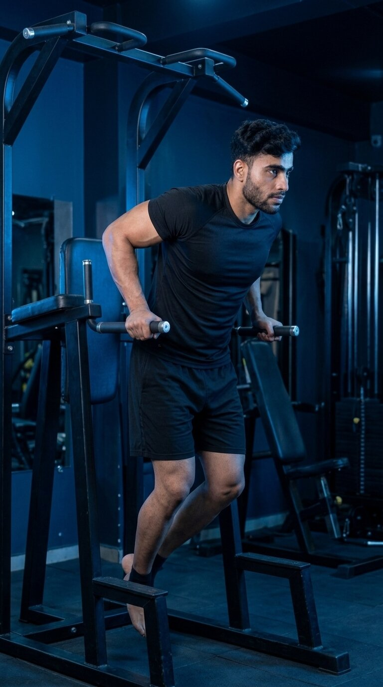

Primary Muscle
Chest
Build Chest Strength, Develop Pressing Power & Master Bodyweight Control
The Chest Dip is a compound bodyweight exercise that primarily targets the chest while also engaging the triceps and front shoulders. By using a controlled forward torso lean and stable pressing technique, it helps develop upper-body strength, muscular control, and powerful bodyweight pressing ability.

Chest
Parallel Bars
Intermediate
Compound
Understand which muscles do most of the work during the Chest Dip and which supporting muscles help press, stabilize, and control your body throughout each repetition.
Chest
Back of Upper Arm
Front Shoulder
Shoulder-Girdle Stabilizer
Discover how the Chest Dip helps develop the chest, build upper-body pressing strength, improve bodyweight control, and provide a challenging path for progressive strength development.
Challenges the pectoralis major through a demanding bodyweight pressing movement, helping develop chest strength and muscular capacity when performed with controlled technique and appropriate depth.
Trains the chest, triceps, and front shoulders to work together as you lower and press your body between the parallel bars, developing coordinated upper-body pressing strength.
As a compound exercise, the Chest Dip recruits the chest, triceps, anterior deltoids, and supporting stabilizers together, making it an efficient movement for upper-body development.
Requires you to stabilize and control your entire body while suspended between parallel bars, helping develop coordination, movement awareness, and control throughout each repetition.
The exercise can be made more accessible with assistance or progressed through additional repetitions, slower tempos, and external resistance as strength and technique improve.
Repeated controlled repetitions challenge the chest, triceps, shoulders, and supporting muscles to sustain effort over time, helping develop upper-body muscular endurance and work capacity.
Follow these step-by-step instructions to perform the Chest Dip with proper body positioning, controlled technique, stable shoulders, and effective chest engagement.
Position yourself between the parallel bars and grip them firmly with your palms facing inward. Keep your wrists neutral and establish a secure, balanced hand position before supporting your bodyweight.
Use a grip width that feels comfortable for your shoulders and allows you to control the movement without excessive wrist or shoulder strain.
Support your body between the bars with your arms extended and shoulders controlled. Keep your core braced, chest naturally lifted, and legs positioned comfortably beneath or slightly behind your body.
Avoid excessively shrugging your shoulders toward your ears. Maintain a strong, stable support position before beginning the descent.
Lean your torso slightly forward and bend your elbows to lower your body between the parallel bars. Maintain a controlled descent while keeping your chest lifted and shoulders stable.
A moderate forward torso lean helps emphasize the chest. Avoid exaggerating the lean or allowing your body to swing during the descent.
Continue lowering until your upper arms are approximately parallel to the floor, or until you reach the deepest comfortable range you can control while maintaining stable shoulder positioning.
Do not force excessive depth. Your ideal range depends on your shoulder mobility, individual structure, and ability to maintain control without discomfort.
Press firmly through the bars and extend your elbows to raise your body back toward the starting position. Maintain your slight forward torso lean, stable shoulders, and controlled body position throughout the ascent.
Avoid using momentum, kicking your legs, or bouncing out of the bottom position. Keep every repetition smooth and controlled from start to finish.
Avoid these common technique errors to improve chest engagement, maintain better shoulder control, and perform the Chest Dip more effectively.
Maintaining a completely upright torso can shift more of the pressing demand toward the triceps and reduce the chest emphasis intended during a chest-focused dip.
Maintain a slight, controlled forward torso lean throughout the movement while keeping your chest naturally lifted and your shoulders stable.
Forcing your body excessively deep can make it harder to maintain stable shoulder positioning and may create unnecessary stress when your mobility or control does not support that range.
Lower only through the deepest comfortable range you can control. For many people, having the upper arms approximately parallel to the floor is a practical reference point.
Allowing your shoulders to rise excessively toward your ears can reduce upper-body stability and make it harder to maintain a strong, controlled pressing position.
Keep your shoulders controlled and avoid excessive shrugging as you support your bodyweight. Maintain a stable upper body throughout both the descent and ascent.
Kicking the legs, bouncing out of the bottom position, or allowing the body to swing can reduce movement control and make each repetition less consistent.
Brace your core, keep your lower body stable, and perform every repetition with a smooth, controlled descent and ascent without kicking, bouncing, or swinging.
Apply these practical coaching cues to improve your Chest Dip technique, maintain better shoulder stability, increase chest engagement, and perform each repetition with greater control and consistency.
Lean your torso slightly forward as you lower between the parallel bars to place greater emphasis on the chest while maintaining a stable and controlled body position.
Avoid exaggerating the forward lean or allowing your body to swing. Maintain a natural chest-focused position that you can control throughout the entire repetition.
Maintain a strong support position and avoid allowing your shoulders to rise excessively toward your ears as you lower and press your body between the bars.
Think about keeping your shoulders controlled rather than forcing them aggressively downward. Your goal is a stable position that remains comfortable throughout the movement.
Lower through the deepest comfortable range you can control while maintaining stable shoulders and smooth movement. For many people, upper arms approximately parallel to the floor provide a practical reference.
More depth is not automatically better. Your ideal range depends on your shoulder mobility, individual structure, strength, and ability to maintain controlled positioning without discomfort.
Increase repetitions or add external resistance only when you can maintain a stable torso, controlled depth, consistent shoulder positioning, and smooth repetitions.
If bodyweight Chest Dips are too difficult, use an appropriate assisted variation. Once controlled bodyweight repetitions become manageable, progress gradually rather than rushing to add resistance.
Progress from assisted Chest Dips to controlled bodyweight repetitions and more challenging weighted variations while maintaining stable shoulders, proper torso positioning, controlled depth, and consistent technique.
Start with an assisted dip machine or another appropriate assisted variation to reduce the amount of bodyweight you must support while learning proper grip, shoulder stability, torso position, and controlled movement.
Secure grip, stable shoulders, slight forward torso lean, controlled descent, comfortable depth, and smooth pressing technique.
Progress to unassisted Chest Dips once you can support and control your own bodyweight. Maintain a slight forward torso lean, stable shoulders, controlled depth, and smooth pressing mechanics throughout every repetition.
Full-body control, consistent forward torso lean, stable shoulder positioning, comfortable range of motion, and repetitions without swinging or bouncing.
Gradually increase the number of controlled bodyweight Chest Dips you can perform while preserving the same torso position, shoulder stability, movement depth, and technique developed during the earlier stages.
Quality repetitions, gradual volume increases, consistent range of motion, controlled tempo, and maintaining technique as fatigue develops.
Once you can perform consistent bodyweight Chest Dips with reliable technique and control, gradually add external resistance to increase the strength challenge according to your experience and training goals.
Gradual resistance increases, stable shoulders, controlled depth, consistent torso positioning, smooth repetitions, and preserving technique as the training load becomes more challenging.
Find clear answers to common questions about Chest Dip technique, muscles worked, torso position, exercise depth, chest emphasis, training volume, and exercise progression.
Chest Dips primarily target the pectoralis major while also involving the triceps brachii and anterior deltoids. The serratus anterior and other stabilizing muscles help maintain controlled shoulder and upper-body positioning throughout the movement.
A slight forward torso lean is commonly used during chest-focused dips to increase chest involvement. Maintain a controlled and natural forward position rather than exaggerating the lean or allowing your body to swing during the movement.
Lower through the deepest comfortable range you can control while maintaining stable shoulder positioning. For many people, having the upper arms approximately parallel to the floor is a useful reference point, although the ideal depth can vary with individual anatomy, mobility, strength, and comfort.
Both variations train the chest, triceps, and front shoulders, but technique can influence the relative emphasis. A slight forward torso lean generally places greater emphasis on the chest, while a more upright torso position tends to increase the relative demand on the triceps. Equipment setup and individual anatomy can also influence how the movement feels.
Chest Dips can be challenging for beginners because they require you to support and press a significant portion of your bodyweight. Beginners can start with an assisted dip machine or another appropriate assisted variation while developing the strength, stability, and control required for unassisted repetitions.
The appropriate number of sets and repetitions depends on your strength, experience, goals, recovery, and overall training program. A common starting point is approximately 2–4 working sets of controlled repetitions while stopping before technique significantly breaks down. Once bodyweight Chest Dips become consistently manageable, you can gradually increase repetitions or add appropriate external resistance according to your training goals.
Explore other chest exercises that complement the Chest Dip and help you develop pressing strength, chest muscle control, bodyweight performance, and balanced upper-body development through different movement patterns and resistance methods.


Continue building your chest strength and training knowledge with step-by-step exercise guides covering proper technique, muscles worked, common mistakes, coaching tips, and progression strategies.